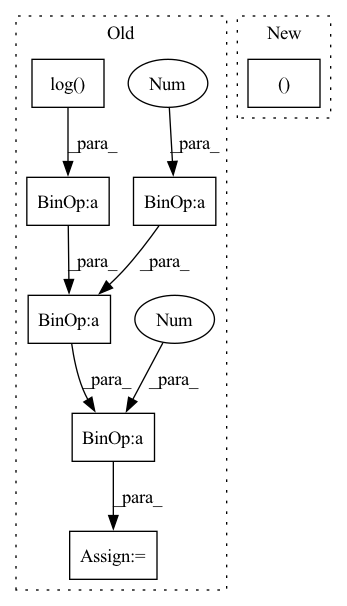

Pattern ID :29297

Before Change
action = a_distribution.rsample()
logp_pi = a_distribution.log_prob(action).sum(axis=-1)
logp_pi -= (2 * (np.log(2) - action - F.softplus(-2 * action))).sum(axis=1)
logp_pi = torch.unsqueeze(logp_pi, dim=1)
action = self.max_action * torch.tanh(action)
After Change
a_dist, a_tanh_mode = self._get_outputs(state)
action = a_dist.rsample()
logp_pi = a_dist.log_prob(action).sum(axis=-1)
return action, logp_pi, a_tanh_mode
def get_log_density(self, state, action):
a_dist, _ = self._get_outputs(state)
action_clip = torch.clip(action, -1. + EPS, 1. - EPS)
In pattern: SUPERPATTERN
Frequency: 3
Non-data size: 7
Instances
Fragment ID: 86029121
Project Name: ryanxhr/dwbc
Commit Name: b3791e408af7125fde12cda1cdeaefbaa400aacc
Time: 2022-06-30
Author: xuhaoran8@jd.com
File Name: algos/DWBC.py
M Class Name: Actor
N Class Name: Actor
M Method Name: forward(2)
N Method Name: forward(2)
M Parent Class: nn.Module
N Parent Class: nn.Module
M File Name: algos/DWBC.py
N File Name: algos/DWBC.py
M Start Line: 35
M End Line: 52
N Start Line: 51
N End Line: 54
'>
Before Change
img_mag = img_fft.abs()
img_mag[img_mag == 0] = 1.
img_mag = torch.log(img_mag)
img_phi = img_fft.angle()
img_mag = 2 * (img_mag - self.mag_min) / (self.mag_max - self.mag_min) - 1
img_phi = img_phi / np.pi
img_fft = torch.stack([img_mag.flatten(), img_phi.flatten()], dim=-1)
After Change
img = self.ds[item]
img_fft = torch.fft.rfftn(img, dim=[0, 1])
img_amp, img_phi = normalize_FC(img_fft, amp_min=self.amp_min, amp_max=self.amp_max)
img_fft = torch.stack([img_amp.flatten(), img_phi.flatten()], dim=-1)
return img_fft, (self.amp_min.unsqueeze(-1), self.amp_max.unsqueeze(-1))
'>
Fragment ID: 86029122
Project Name: juglab/fourierimagetransformer
Commit Name: 931f91c1b27b26ccf5f362b49a9ed4f667944627
Time: 2021-03-30
Author: tibuch@mpi-cbg.de
File Name: fit/datamodules/super_res/SResFCDataset.py
M Class Name: SResFourierCoefficientDataset
N Class Name: SResFourierCoefficientDataset
M Method Name: __getitem__(2)
N Method Name: __getitem__(2)
M Parent Class: Dataset
N Parent Class: Dataset
M File Name: fit/datamodules/super_res/SResFCDataset.py
N File Name: fit/datamodules/super_res/SResFCDataset.py
M Start Line: 29
M End Line: 41
N Start Line: 30
N End Line: 35
'>
Before Change
// logp_action -= (2 * (np.log(2) - raw_action - F.softplus(-2 * raw_action))).sum(axis=1)
// logp_action = torch.unsqueeze(logp_action, dim=1)
logp_action = a_distribution.log_prob(raw_action)
logp_action -= (2 * (np.log(2) - raw_action - F.softplus(-2 * raw_action)))
return logp_action
After Change
return action, logp_pi, a_tanh_mode
def get_log_density(self, state, action):
a_dist, _ = self._get_outputs(state)
action_clip = torch.clip(action, -1. + EPS, 1. - EPS)
logp_action = a_dist.log_prob(action_clip)
return logp_action
'>
Fragment ID: 86029124
Project Name: ryanxhr/dwbc
Commit Name: b3791e408af7125fde12cda1cdeaefbaa400aacc
Time: 2022-06-30
Author: xuhaoran8@jd.com
File Name: algos/DWBC.py
M Class Name: Actor
N Class Name: Actor
M Method Name: get_log_density(3)
N Method Name: get_log_density(3)
M Parent Class: nn.Module
N Parent Class: nn.Module
M File Name: algos/DWBC.py
N File Name: algos/DWBC.py
M Start Line: 55
M End Line: 71
N Start Line: 57
N End Line: 59